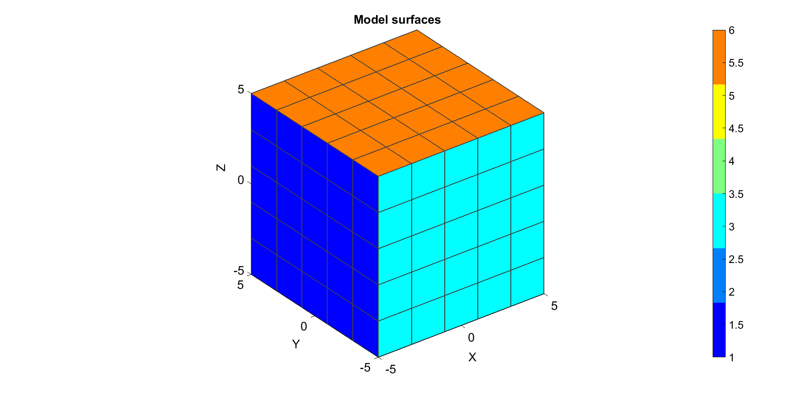
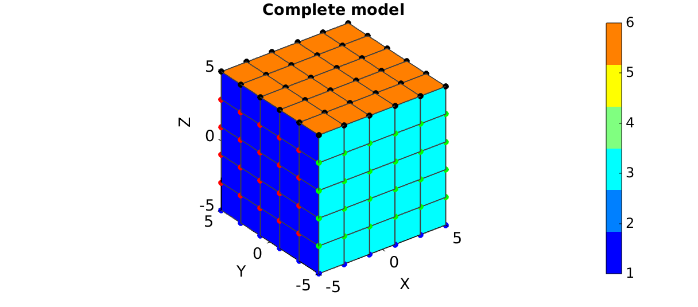
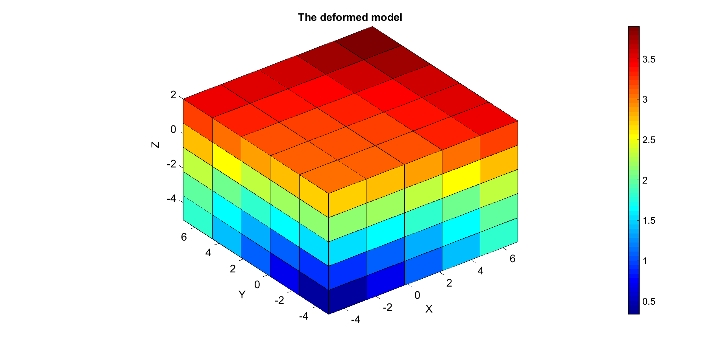
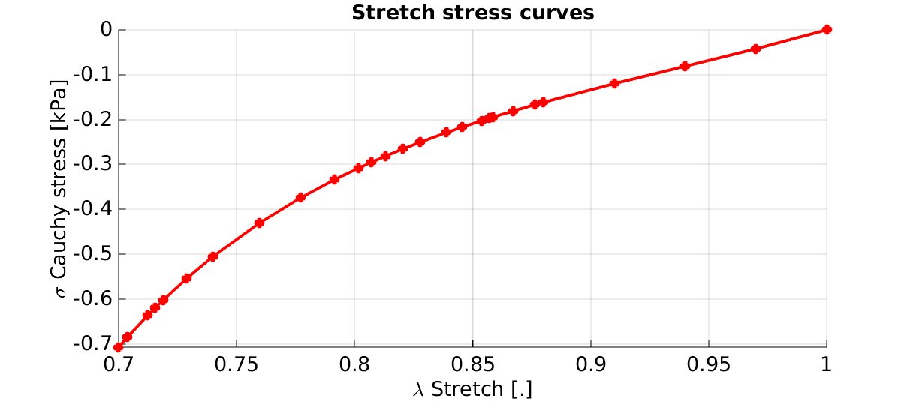

DEMO_FEBio_block_uniaxial_compression
Below is a demonstration for: 1) Building an FEBio model for uniaxial compression 2) Running the model 3) Importing displacement and force results 4) Plotting Cauchy stress, displacement results
Contents
clear; close all; clc; warning off;
Plot settings
figColor='w'; figColorDef='white'; fontSize=20; faceAlpha1=0.8; faceAlpha2=1; edgeColor=0.25*ones(1,3); edgeWidth=1.5; markerSize=25; lineWidth=3;
Control parameters
% path names filePath=mfilename('fullpath'); savePath=fullfile(fileparts(filePath),'data','temp'); modelName=fullfile(savePath,'tempModel'); %Specifying dimensions and number of elements sampleWidth=10; sampleThickness=10; sampleHeight=10; pointSpacings=2*ones(1,3); initialArea=sampleWidth*sampleThickness; numElementsWidth=round(sampleWidth/pointSpacings(1)); numElementsThickness=round(sampleThickness/pointSpacings(2)); numElementsHeight=round(sampleHeight/pointSpacings(3)); stretchLoad=0.7; displacementMagnitude=[0 0 (stretchLoad*sampleHeight)-sampleHeight]; %Material parameter set k_factor=1e4; c1=1e-3; m1=12; k=c1*k_factor;
CREATING MESHED BOX
%Create box 1 boxDim=[sampleWidth sampleThickness sampleHeight]; %Dimensions boxEl=[numElementsWidth numElementsThickness numElementsHeight]; %Number of elements [box1]=hexMeshBox(boxDim,boxEl); E=box1.E; V=box1.V; Fb=box1.Fb; faceBoundaryMarker=box1.faceBoundaryMarker; X=V(:,1); Y=V(:,2); Z=V(:,3); VE=[mean(X(E),2) mean(Y(E),2) mean(Z(E),2)]; elementMaterialIndices=ones(size(E,1),1);
% Plotting boundary surfaces hf=figuremax(figColor,figColorDef); title('Model surfaces','FontSize',fontSize); xlabel('X','FontSize',fontSize); ylabel('Y','FontSize',fontSize); zlabel('Z','FontSize',fontSize); hold on; patch('Faces',Fb,'Vertices',V,'FaceColor','flat','CData',faceBoundaryMarker,'FaceAlpha',faceAlpha2,'lineWidth',edgeWidth,'edgeColor',edgeColor); colormap(jet(6)); colorbar; set(gca,'FontSize',fontSize); view(3); axis tight; axis equal; grid on; drawnow;
DEFINE BC's
%Define supported node sets logicFace=faceBoundaryMarker==1; Fr=Fb(logicFace,:); bcSupportList_X=unique(Fr(:)); logicFace=faceBoundaryMarker==3; Fr=Fb(logicFace,:); bcSupportList_Y=unique(Fr(:)); logicFace=faceBoundaryMarker==5; Fr=Fb(logicFace,:); bcSupportList_Z=unique(Fr(:)); %Prescribed displacement nodes logicPrescribe=faceBoundaryMarker==6; Fr=Fb(logicPrescribe,:); bcPrescribeList=unique(Fr(:)); bcPrescribeMagnitudes=displacementMagnitude(ones(1,numel(bcPrescribeList)),:);
Visualize BC's
hf=figuremax(figColor,figColorDef); title('Complete model','FontSize',fontSize); xlabel('X','FontSize',fontSize); ylabel('Y','FontSize',fontSize); zlabel('Z','FontSize',fontSize); hold on; patch('Faces',Fb,'Vertices',V,'FaceColor','flat','CData',faceBoundaryMarker,'FaceAlpha',faceAlpha2,'lineWidth',edgeWidth,'edgeColor',edgeColor); plotV(V(bcSupportList_X,:),'r.','MarkerSize',markerSize); plotV(V(bcSupportList_Y,:),'g.','MarkerSize',markerSize); plotV(V(bcSupportList_Z,:),'b.','MarkerSize',markerSize); plotV(V(bcPrescribeList,:),'k.','MarkerSize',markerSize); set(gca,'FontSize',fontSize); colormap(jet(6)); colorbar; set(gca,'FontSize',fontSize); view(3); axis tight; axis equal; grid on; drawnow;
CONSTRUCTING FEB MODEL
FEB_struct.febio_spec.version='1.2'; % Defining file names FEB_struct.run_filename=[modelName,'.feb']; %FEB file name FEB_struct.run_logname=[modelName,'.txt']; %FEBio log file name %Geometry section FEB_struct.Geometry.Nodes=V; FEB_struct.Geometry.Elements={E}; %The element sets FEB_struct.Geometry.ElementType={'hex8'}; %The element types FEB_struct.Geometry.ElementMat={elementMaterialIndices}; %Material section %Material 1 uncoupled hyperelastic Mat1.type='Ogden'; Mat1.props={'c1','m1','k'}; Mat1.vals={c1,m1,k}; Mat1.aniso_type='none'; %Collect materials in cell array FEB_struct.Materials={Mat1}; %Step specific control sections FEB_struct.Control.AnalysisType='static'; FEB_struct.Control.Properties={'time_steps','step_size',... 'max_refs','max_ups',... 'dtol','etol','rtol','lstol'}; FEB_struct.Control.Values={10,0.1,... 15,0,... 0.001,0.01,0,0.9}; FEB_struct.Control.TimeStepperProperties={'dtmin','dtmax','max_retries','opt_iter','aggressiveness'}; FEB_struct.Control.TimeStepperValues={1e-5,0.1,10,10,1}; %Adding BC information FEB_struct.Boundary.FixList={bcSupportList_X,bcSupportList_Y,bcSupportList_Z}; FEB_struct.Boundary.FixType={'x','y','z'}; FEB_struct.Boundary.PrescribeList={bcPrescribeList}; FEB_struct.Boundary.PrescribeType={'z'}; FEB_struct.Boundary.PrescribeValues={displacementMagnitude(ones(numel(bcPrescribeList),1),3)}; FEB_struct.Boundary.PrescribeTypes={'relative'}; FEB_struct.Boundary.LoadCurveIds=1; %Load curves FEB_struct.LoadData.LoadCurves.id=1; FEB_struct.LoadData.LoadCurves.type={'linear'}; FEB_struct.LoadData.LoadCurves.loadPoints={[0 0;1 1;]}; %Adding output requests FEB_struct.Output.VarTypes={'displacement','stress','relative volume','shell thickness'}; %Specify log file output run_disp_output_name=[FEB_struct.run_filename(1:end-4),'_node_out.txt']; run_force_output_name=[FEB_struct.run_filename(1:end-4),'_force_out.txt']; FEB_struct.run_output_names={run_disp_output_name,run_force_output_name}; FEB_struct.output_types={'node_data','node_data'}; FEB_struct.data_types={'ux;uy;uz','Rx;Ry;Rz'};
SAVING .FEB FILE
FEB_struct.disp_opt=0; %Display waitbars option
febStruct2febFile_v1p2(FEB_struct);
%%%%%%%%%%%%%%%%%%%%%%%%%%%%%%%%%%%%%%%%%%%%% --- Writing FEBio XML object --- 23-Sep-2014 12:33:05 Adding Module level Adding Globals level Adding Material level Adding Geometry level ----> Adding node field ----> Adding element field ----> Adding hex8 element entries.... Adding Output level ----> Adding plotfile field ----> Adding logfile field Adding Boundary level ----> Defining fix type boundary conditions ----> Defining prescribe type boundary conditions Adding LoadData level ----> Defining load curves Writing .feb file --- Done --- 23-Sep-2014 12:33:05
RUNNING FEBIO JOB
% FEBioRunStruct.FEBioPath='C:\Progra~1\FEBio1p8\febio.exe'; % FEBioRunStruct.FEBioPath='C:\Progra~1\FEBio2p0\bin\FEBio2x64.exe'; FEBioRunStruct.run_filename=FEB_struct.run_filename; FEBioRunStruct.run_logname=FEB_struct.run_logname; FEBioRunStruct.disp_on=1; FEBioRunStruct.disp_log_on=1; % FEBioRunStruct.run_string_quit=run_string_quit; FEBioRunStruct.t_check=0.25; %Time for checking log file (dont set too small) FEBioRunStruct.maxtpi=1e99; %Max analysis time FEBioRunStruct.maxLogCheckTime=3; %Max log file checking time %------------------------------------------------------------------- [rundFlag]=runMonitorFEBio(FEBioRunStruct);%START FEBio NOW!!!!!!!! %-------------------------------------------------------------------
%%%%%%%%%%%%%%%%%%%%%%%%%%%%%%%%%%%%%%%%%%%%% --- STARTING FEBIO JOB --- 23-Sep-2014 12:33:05 Waiting for log file... Proceeding to check log file...23-Sep-2014 12:33:05 ------- converged at time : 0.1 ------- converged at time : 0.2 ------- converged at time : 0.3 ------- converged at time : 0.4 ------- converged at time : 0.5 ------- converged at time : 0.6 ------- converged at time : 0.7 ------- converged at time : 0.8 ------- converged at time : 0.9 ------- converged at time : 1 --- Done --- 23-Sep-2014 12:33:06
IMPORTING NODAL DISPLACEMENT RESULTS
Importing nodal displacements from a log file
[~, N_disp_mat,~]=importFEBio_logfile(FEB_struct.run_output_names{1}); %Nodal displacements
DN=N_disp_mat(:,2:end,end); %Final nodal displacements
CREATING NODE SET IN DEFORMED STATE
V_def=V+DN; DN_magnitude=sqrt(sum(DN.^2,2));
Plotting the deformed model
[CF]=vertexToFaceMeasure(Fb,DN_magnitude); hf1=figuremax(figColor,figColorDef); title('The deformed model','FontSize',fontSize); xlabel('X','FontSize',fontSize); ylabel('Y','FontSize',fontSize); zlabel('Z','FontSize',fontSize); hold on; hps=patch('Faces',Fb,'Vertices',V_def,'FaceColor','flat','CData',CF); view(3); axis tight; axis equal; grid on; colormap jet; colorbar; % camlight headlight; set(gca,'FontSize',fontSize); drawnow;
IMPORTING NODAL FORCES
Importing nodal forces from a log file
[time_mat, N_force_mat,~]=importFEBio_logfile(FEB_struct.run_output_names{2}); %Nodal displacements
FZ_set=N_force_mat(bcPrescribeList,end,:); %Final nodal displacements
DERIVING STRESS METRICS
%Get Z forces FZ=sum(N_force_mat(bcPrescribeList,end,:),1); FZ=[0; FZ(:)]; %Mean top surface nodal forces %Derive applied stretch DZ_set=N_disp_mat(bcPrescribeList,end,:); %Final nodal displacements DZ_set=mean(DZ_set,1); stretch_sim=(DZ_set+sampleHeight)./sampleHeight; stretch_sim=[1; stretch_sim(:)]; %Derive simulated Cauchy stress (alternatively import stress and take the mean) currentArea=initialArea./stretch_sim; stress_cauchy_sim=FZ./currentArea; %Cauchy stress stress_cauchy_sim=stress_cauchy_sim.*1e3; %Scale to kPa
hf1=figuremax(figColor,figColorDef); title('Stretch stress curves','FontSize',fontSize); xlabel('\lambda Stretch [.]','FontSize',fontSize); ylabel('\sigma Cauchy stress [kPa]','FontSize',fontSize); zlabel('Z','FontSize',fontSize); hold on; plot(stretch_sim,stress_cauchy_sim,'r.-','lineWidth',lineWidth,'markerSize',markerSize); view(2); axis tight; grid on; set(gca,'FontSize',fontSize); drawnow;

GIBBON
Kevin M. Moerman (kevinmoerman@hotmail.com)